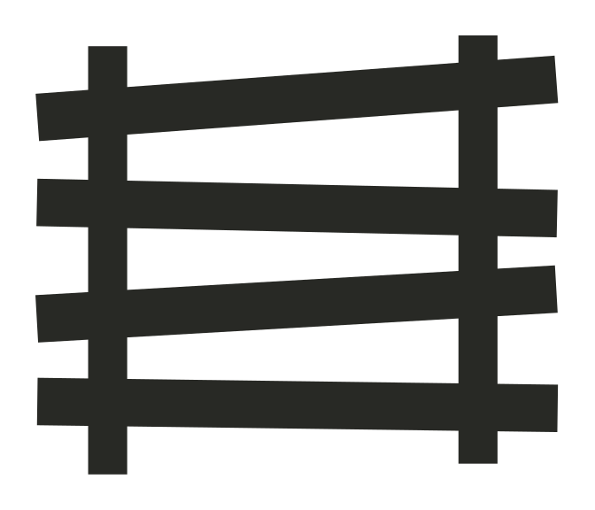

GABINETE DE ESCRITA
Seus textos
Folhas
Seu gabinete começa com uma folha. Dê um título e encontre seu primeiro parágrafo.

ESCREVARAL OSGABINETE DE ESCRITA
Seu gabinete começa com uma folha. Dê um título e encontre seu primeiro parágrafo.
SEU ESPAÇO
Som desligado.
O som desliga ao sair desta página.
Use o mesmo nome para reunir folhas. Deixe vazio para manter a folha avulsa.
Textos e cópias trazidos viram novas folhas. Seu acervo permanece.
As folhas ficam neste navegador, neste aparelho. Guarde uma cópia do acervo para levá-las com você.
Um arquivo único para abrir offline. Em aparelhos antigos, a abertura depende do aplicativo usado.
SUAS FOLHAS
Um lugar para voltar aos seus textos.
OLHAR DO TEXTO
Uma lente de cada vez. Escolha o que observar no seu manuscrito.
Convenções
Gramática
Escolhas de escrita
Poesia
Nenhuma análise iniciada.
Uma base pequena, com limites à vista. Ausência de apontamentos não significa que tudo foi verificado.
Um tempo para escrever. Outro para respirar.
Pronto para começar.
Ao terminar a escrita, o Focus abre para a pausa. Se o aparelho dormir, o tempo é conferido ao voltar.
Use vírgula ou ponto decimal. % divide o número por 100.
| Dom | Seg | Ter | Qua | Qui | Sex | Sáb |
|---|
Afaste os olhos da tela. A escrita pode esperar.
DESAFIO DE CONCENTRAÇÃO